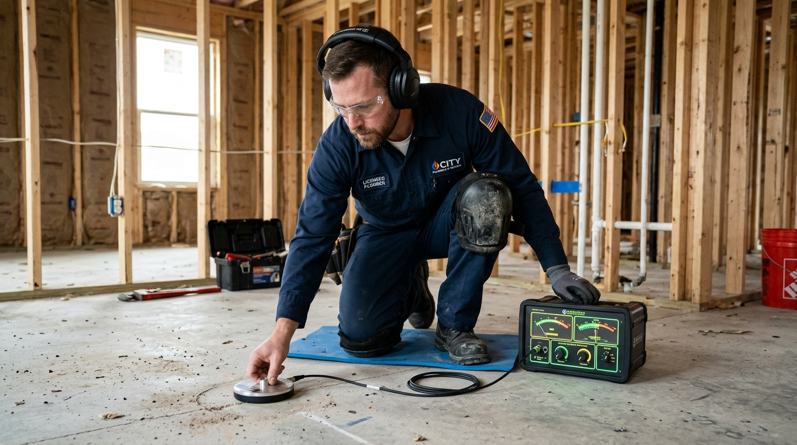
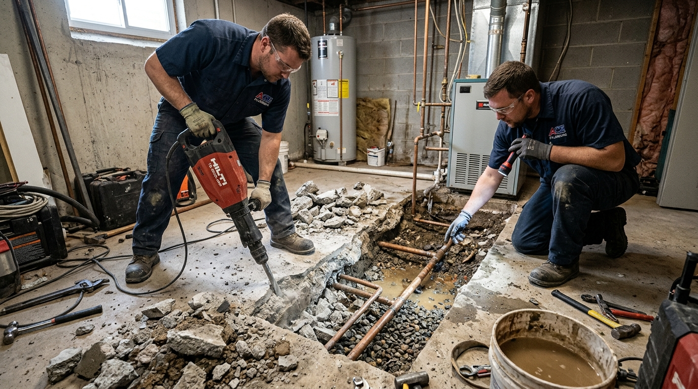
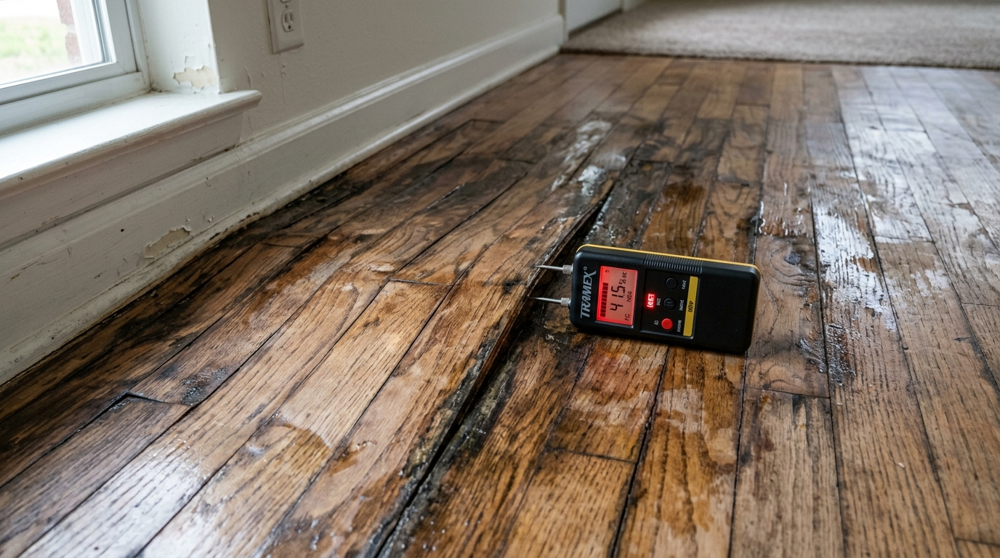
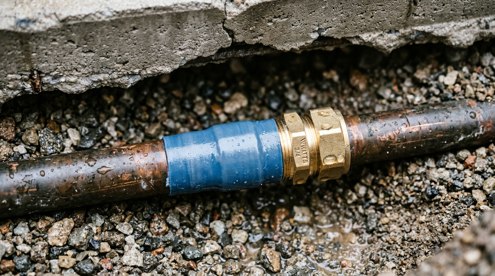

If you've noticed a sudden spike in your water bill, warm spots on your floor, or the sound of running water when all taps are off, you may be facing a slab leak — one of the most stressful and potentially expensive plumbing problems a homeowner can encounter. Understanding the true slab leak repair cost upfront can help you make smarter decisions, avoid being overcharged, and get your home back to normal as quickly as possible.
In this comprehensive guide, we'll walk you through everything: average costs, what drives the price up or down, the different repair methods and their price ranges, what detection involves, and how to choose the right plumber. By the end, you'll know exactly what to expect and how to protect your home and budget.

A slab leak occurs when a water or drain pipe located beneath your home's concrete foundation develops a crack, pinhole, or joint failure, allowing water to escape. Because these pipes are buried under several inches of concrete, the leaks are often invisible at first — slowly saturating the soil beneath your home, raising your water bills, and sometimes causing structural damage before you even notice them.
Slab leaks are surprisingly common, especially in homes built before the 1990s where copper pipes were standard. These pipes corrode over time due to chemical reactions with minerals in the soil and the water supply itself. Homes with hard water are at particularly high risk, as mineral buildup accelerates corrosion from the inside out.
The national average for slab leak repair in the United States ranges from $500 to $4,000, with the total project cost — including detection, excavation, pipe repair, and concrete restoration — often landing between $2,000 and $6,000. In severe cases, full repipe projects can reach $15,000 or more.
These numbers vary enormously based on the location of the leak, the depth of the pipes, the repair method chosen, your local labor rates, and the extent of secondary damage (flooring, drywall, landscaping) that must also be addressed.
| Repair Component | Typical Cost Range |
|---|---|
| Leak Detection | $150 – $400 |
| Spot Repair (open slab) | $500 – $2,000 |
| Pipe Rerouting | $2,000 – $5,000 |
| Epoxy Pipe Lining | $1,000 – $3,500 |
| Full Repipe (copper or PEX) | $4,000 – $15,000+ |
| Concrete Restoration | $300 – $1,500 |
| Flooring Replacement | $500 – $4,000 |
| Water Damage Mitigation | $1,000 – $5,000 |
These figures reflect U.S. national averages. Prices in high cost-of-living cities like Los Angeles, San Francisco, or New York can run 30–50% higher, while prices in rural areas may be on the lower end of each range.

Not all slab leaks are repaired the same way. The method your plumber recommends depends on the pipe material, the leak location, the extent of the damage, and the age of your overall plumbing system. Each approach carries different costs, disruption levels, and long-term outcomes.
This is the most direct repair method. The plumber cuts through the concrete directly above the leak, exposes the pipe, and repairs or replaces the damaged section. It's cost-effective when the leak is isolated and easily accessible.
Rather than digging into the slab, the plumber installs a new pipe run through the walls, attic, or crawl space — bypassing the old underground pipe entirely. This avoids concrete work but requires new pipe runs and wall patching.
A specialized epoxy resin is applied inside the existing pipe, coating the interior and sealing the leak from within. This trenchless approach requires no concrete cutting and is minimally invasive.
If your plumbing system is old, extensively corroded, or has suffered multiple leaks, a complete repipe — replacing all the pipes in the home with new copper or PEX tubing — may be the most cost-effective long-term solution.
Before any repair can happen, the leak must be precisely located. Slab leak detection is a skilled service using specialized equipment, and most professional plumbers charge separately for this step. Trying to skip detection or guess the location results in unnecessary concrete cutting and higher overall costs.
Detection costs typically range from $150 to $400, though complex cases or large properties can push this higher. Many plumbers will apply the detection fee toward the repair cost if you proceed with them.
It is also worth noting that some slab leaks escalate quickly into full plumbing emergencies before a homeowner realizes what is happening. If you are dealing with an urgent situation right now, our detailed guide on emergency slab leak repair walks you through exactly what to do in the first critical minutes — from shutting off your water supply to navigating insurance claims under pressure.

Two homeowners with slab leaks can end up paying vastly different amounts depending on a range of variables. Understanding these factors helps you evaluate quotes and make smarter repair decisions.
This is one of the most common questions homeowners ask — and the answer is: it depends on your policy and the cause of the leak.
Most standard homeowner's insurance policies cover the resulting water damage from a slab leak if the leak was sudden and accidental (for example, a pipe that burst unexpectedly). However, they typically do not cover the plumbing repair itself — meaning they may pay to fix your flooring and drywall but not to repair or replace the pipe.
Gradual leaks caused by corrosion, neglect, or wear over time are generally excluded from coverage, as insurance companies consider these a maintenance issue.

The earlier you identify a slab leak, the less damage it causes — and the lower your total repair bill. Many homeowners ignore early warning signs for months, turning a relatively simple repair into a major restoration project.
Not all plumbers have the experience, equipment, or licensing to properly handle slab leak detection and repair. Choosing the wrong contractor can cost you significantly more in the long run — through missed leaks, unnecessary concrete cutting, or improper repairs that fail again within months.
Some homeowners wonder whether they can tackle a slab leak themselves to save money. The honest answer: no. Slab leak detection and repair requires specialized equipment, structural knowledge, and licensed plumbing skills that cannot be substituted by DIY effort. Beyond the technical barriers, cutting into a concrete slab without engineering guidance can compromise your home's structural integrity. Improper pipe repairs can fail quickly, leading to even greater water damage.
What you can do yourself is monitor for the warning signs, shut off your main water supply the moment you suspect a slab leak (to limit damage), and gather multiple quotes from licensed plumbers before proceeding. These steps alone can save you thousands.
The duration depends heavily on the repair method and the complexity of the leak:
| Repair Method | Typical Duration |
|---|---|
| Detection Only | 2–4 hours |
| Spot Repair (open slab) | 1–2 days |
| Pipe Rerouting | 1–3 days |
| Epoxy Pipe Lining | 1–2 days |
| Full Repipe | 3–7 days |
During open slab repairs, you will likely need to vacate the affected area or the entire home for at least part of the repair period due to dust, noise, and equipment. For epoxy lining and rerouting jobs, disruption is typically less severe.
A: The average total slab leak repair cost in the U.S. ranges from $2,000 to $6,000 when including detection, concrete work, pipe repair, and restoration. Simple spot repairs can be done for $500–$2,000 while full repipe projects run $4,000–$15,000 or more.
A: Key signs include unexplained high water bills, the sound of running water when all taps are off, warm spots on the floor, damp carpeting or flooring, mold odors, cracks in walls or floors, and low water pressure. If you notice two or more of these simultaneously, call a licensed plumber for an inspection immediately.
A: Most policies cover resulting water damage (flooring, drywall) from sudden and accidental slab leaks but do not cover the plumbing repair itself. Gradual corrosion-related leaks are typically excluded. Always review your policy and file a claim before repairs begin.
A: Most slab leak repairs take 1 to 3 days depending on the method. Detection takes 2–4 hours, spot repairs take 1–2 days, and full repipes take 3–7 days. Concrete curing after patching may require additional drying time before flooring can be restored.
A: Epoxy pipe lining (trenchless repair) is often the least disruptive and can be cost-competitive at $1,000–$3,500 when it's applicable. For isolated leaks, a targeted spot repair can also be a low-cost option. Avoid delaying repairs — a small leak that doubles in severity can double your repair costs.
A: Yes. If left unrepaired, a slab leak saturates the soil beneath your foundation, causing the ground to shift, settle unevenly, or expand. This can crack your foundation slab, bow walls, and misalign doors and windows — leading to structural repairs costing tens of thousands of dollars in addition to the plumbing costs.
A: Always feel free to get 2–3 quotes and professional opinions. Ask each plumber to provide their detection results in writing. Reputable plumbers welcome the chance to verify their diagnosis, as it protects both parties. If two plumbers agree on the location and severity, you can proceed with confidence.
A: In most cases, repairing a slab leak is significantly more cost-effective than selling at a loss. Unrepaired slab leaks must be disclosed to buyers and dramatically reduce your home's sale price — often by far more than the repair would cost. Even a full repipe at $10,000–$15,000 adds value and peace of mind that far exceeds the cost.
While no plumbing system lasts forever, there are proactive steps you can take to extend the life of your pipes and dramatically reduce the risk of slab leaks:
Worried about a slab leak? Get expert detection and repair from a licensed team you can trust.
→ Request a Free Slab Leak Inspection at The Super PlumberSlab leaks are stressful — but they're manageable when you understand what you're dealing with and act quickly. The biggest mistake homeowners make is waiting too long, hoping the problem resolves itself or the symptoms are from something less serious. They never are. A slab leak will only worsen over time, saturating your foundation, damaging your floors, growing mold in your walls, and ultimately costing far more in repairs than if you'd called a plumber at the first warning sign.
The typical slab leak repair cost of $2,000–$6,000, while significant, is a manageable investment compared to the structural damage, mold remediation, flooring replacement, and reduced home value that come with delayed action. Get the detection done, understand your repair options, compare at least two or three quotes from licensed plumbers, and check your homeowner's insurance policy before work begins.
Your home's foundation is its literal base — protect it with the same urgency you'd give any critical infrastructure in your life.
For professional slab leak detection and repair, contact The Super Plumber — serving homeowners with fast, accurate, and fairly priced slab leak solutions.